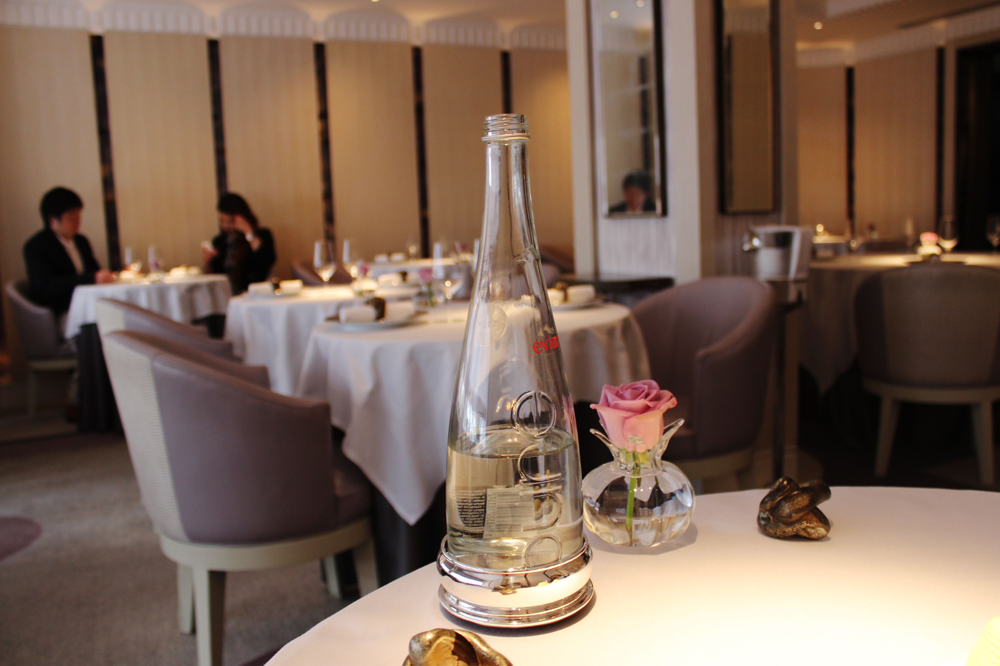
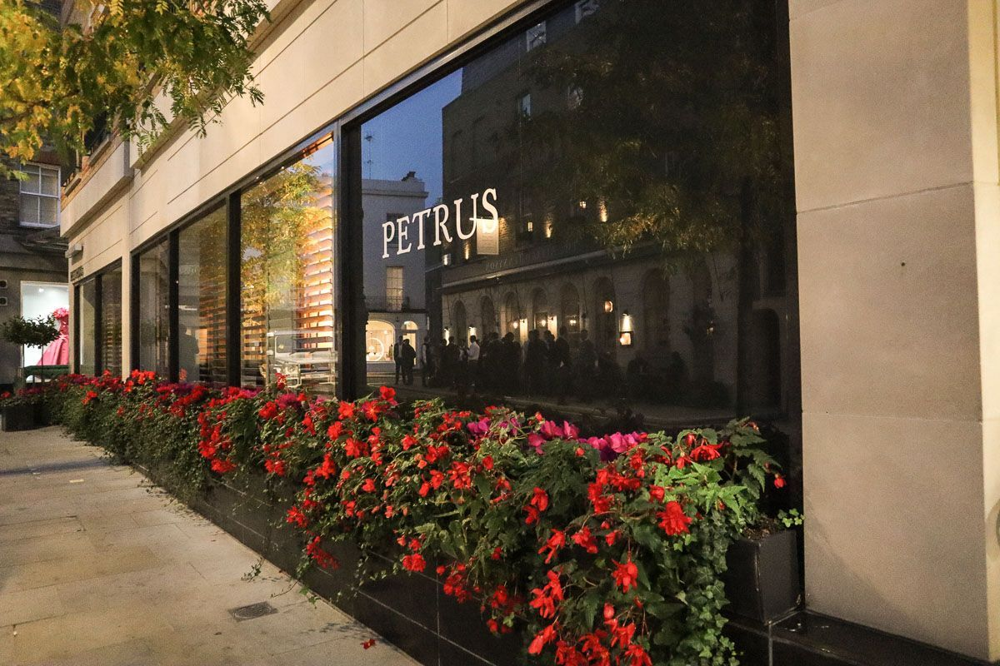
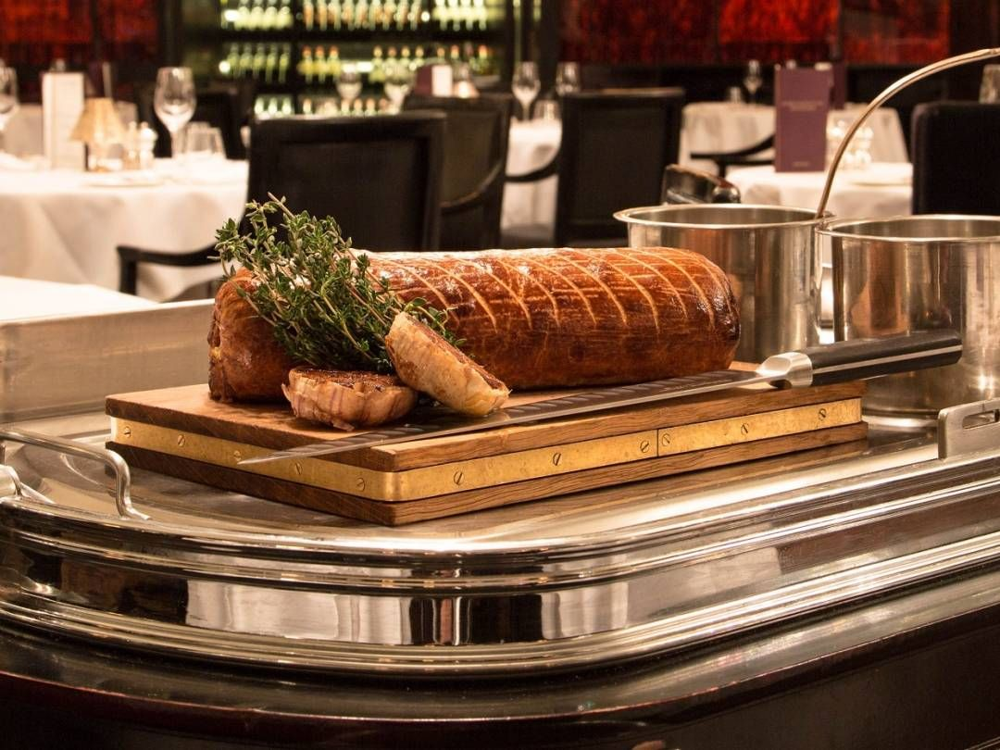

Restaurantes
Los más Galardonados
Street Pizza Bread Street Kitchen
.jpg)
En el número 10 de Bread Street en Londres. Desde luego, el nombre de la calle invita a poner un restaurante ahí. DJ´s femeninas, pizza, cócteles…un nuevo concepto de fast food.
Restaurant Gordon Ramsay

Se podría decir que este es “El restaurante”. Galardonado con tres Estrellas Michelín, se caracteriza por su súper elegante cocina francesa. La dirección es el número 68 de Royal Hospital Road en Londres.
Pétrus

Uno de los restaurantes más exclusivos de la capital británica. Como reclamo, cuenta con una lista ganadora de vinos internacionales, no aptos para todos los bolsillos. Lo encontrarás en 1 Kinnerton Street, Kinghtsbridge, en Londres.
Savoy Grill

Está ubicado en Savoy Hotel, The Strand en Londres. Icónico, famoso y único, comida clásica en un entorno histórico. Su temática son los elegantes años veinte.
Hell's Kitchen

Contacto
Contactanos
Mi dirección
A108 Adam Street, New York, NY 535022
Social Profiles
Email Me
contact@example.com
Call Me
+1 5589 55488 55
Designed by MoisésArevalo & Cristian Marenco